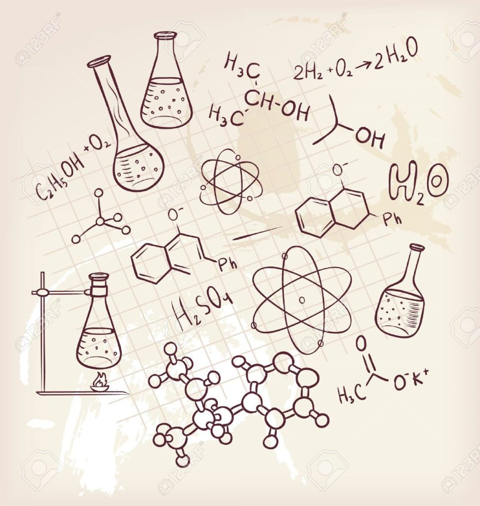

Предмет: химия
Химия, наука о составе веществ и их превращениях, начинается с открытия человеком способности огня изменять природные материалы. По-видимому, люди умели выплавлять медь и бронзу, обжигать глиняные изделия, получать стекло еще за 4000 лет до н.э. К 7 в. до н.э. Египет и Месопотамия стали центрами производства красителей; там же получали в чистом виде золото, серебро и другие металлы. Примерно с 1500 до 350 до н.э. для производства красителей использовали перегонку, а металлы выплавляли из руд, смешивая их с древесным углем и продувая через горящую смесь воздух. Самим процедурам превращения природных материалов придавали мистический смысл.
